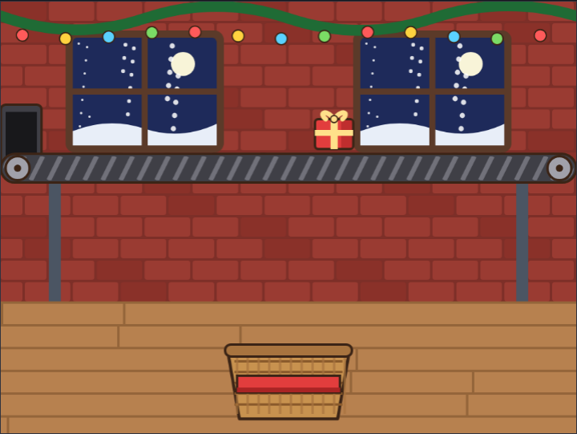
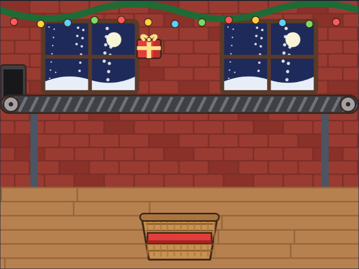
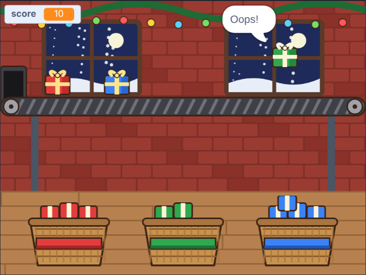
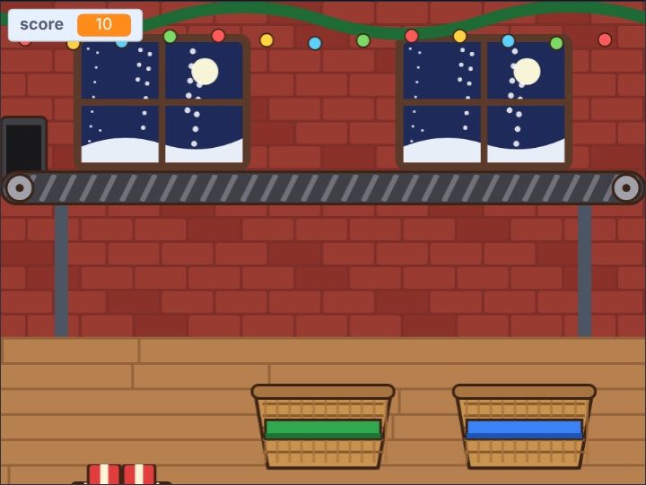
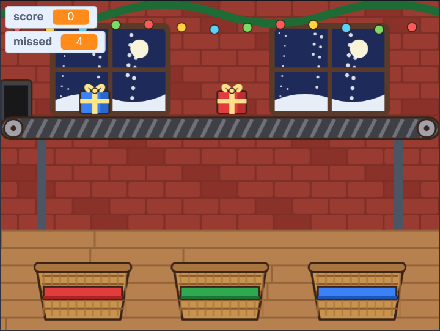
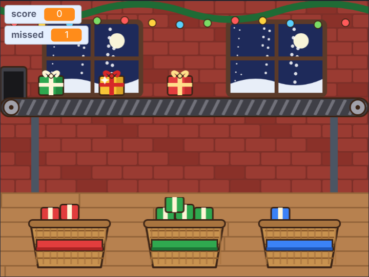

<title>Gift Factory Tutorial</title>
<meta name="claude:viewport-fit-sides" content="cover">
<link rel="preconnect" href="https://fonts.googleapis.com">
<link rel="stylesheet" href="https://fonts.googleapis.com/css2?family=Fredoka:wght@500;600&family=Atkinson+Hyperlegible:ital,wght@0,400;0,700;1,400&family=JetBrains+Mono:wght@400&display=swap">
<style>
/* Layout: one reading column; each step is a numbered section: the big idea, the blocks, a picture and a checkpoint file. */
:root {
  --bg: #f4f3fa; --surface: #ffffff; --fg: #1f1d33; --muted: #5c5a74; --line: #dddbea;
  --accent: #3b3f9e; --accent-soft: #e6e6fa; --drone: #d97706; --code-bg: #f8f7fd;
  --display: "Fredoka", "Trebuchet MS", system-ui, sans-serif;
  --body: "Atkinson Hyperlegible", "Segoe UI", system-ui, sans-serif;
  --mono: "JetBrains Mono", ui-monospace, Consolas, monospace;
}
@media (prefers-color-scheme: dark) { :root:not([data-theme="light"]) {
  --bg: #13121f; --surface: #1c1a2c; --fg: #ebe9f7; --muted: #a6a3bf; --line: #312e47;
  --accent: #a5a8ff; --accent-soft: #23244a; --drone: #fbbf24; --code-bg: #232036; color-scheme: dark; } }
:root[data-theme="dark"] {
  --bg: #13121f; --surface: #1c1a2c; --fg: #ebe9f7; --muted: #a6a3bf; --line: #312e47;
  --accent: #a5a8ff; --accent-soft: #23244a; --drone: #fbbf24; --code-bg: #232036; color-scheme: dark; }

body { background: var(--bg); color: var(--fg); font: 18px/1.6 var(--body);
  padding-left: max(16px, env(safe-area-inset-left, 0px)); padding-right: max(16px, env(safe-area-inset-right, 0px)); padding-block: 40px 72px; }
main { max-width: 760px; margin: 0 auto; display: grid; gap: 48px; }
main > *, .step > *, .stack > *, .intro > * { min-width: 0; }
h1, h2, h3 { font-family: var(--display); font-weight: 600; text-wrap: balance; margin: 0; line-height: 1.15; }
h1 { font-size: clamp(2rem, 6vw, 2.9rem); }
h2 { font-size: 1.7rem; }
h3 { font-size: 1.15rem; font-weight: 500; }
p { margin: 0; max-width: 66ch; }
a { color: var(--accent); }
code { font: 0.88em var(--mono); background: var(--code-bg); padding: 1px 5px; border-radius: 4px; overflow-wrap: anywhere; }
.eyebrow { font: 600 0.78rem var(--body); letter-spacing: 0.08em; text-transform: uppercase; color: var(--drone); }
.stack { display: grid; gap: 16px; min-width: 0; }
.intro { display: grid; gap: 14px; }
.intro p { color: var(--muted); font-size: 1.08rem; }

.plan { list-style: none; margin: 0; padding: 0; display: grid; gap: 6px; counter-reset: plan; }
.plan li { display: flex; flex-wrap: wrap; align-items: baseline; gap: 4px 12px; padding: 8px 12px; border-radius: 6px; counter-increment: plan; }
.plan li::before { content: counter(plan); font: 600 0.95rem var(--display); color: var(--muted); width: 1.4em; }
.plan .name { font-weight: 700; }
.plan a { text-decoration: none; }
.plan a:hover .name, .plan a:focus-visible .name { text-decoration: underline; }
.plan .what { color: var(--muted); flex: 1 1 220px; }

.step { display: grid; gap: 20px; border-top: 2px solid var(--line); padding-top: 32px; }
.step-head { display: flex; align-items: center; gap: 14px; }
.num { flex: none; width: 44px; height: 44px; border-radius: 50%; display: grid; place-items: center;
  background: var(--accent); color: var(--surface); font: 600 1.3rem var(--display); }
ol.do { margin: 0; padding-left: 1.3em; display: grid; gap: 8px; max-width: 66ch; }

.blocks-panel { background: var(--surface); border: 1px solid var(--line); border-radius: 8px; padding: 16px; overflow-x: auto; }
.blocks-panel .label { font: 700 0.78rem var(--body); letter-spacing: 0.06em; text-transform: uppercase; color: var(--muted); margin-bottom: 8px; }
pre.blocks { margin: 0; font: 13px var(--mono); white-space: pre; }

.note { border-left: 3px solid var(--drone); padding: 2px 0 2px 14px; color: var(--fg); }
.note b { color: var(--drone); }
figure { margin: 0; display: grid; gap: 8px; }
figure img { width: 100%; border-radius: 8px; border: 1px solid var(--line); display: block; }
figcaption { font-size: 0.9rem; color: var(--muted); }

.table-wrap { overflow-x: auto; }
table { border-collapse: collapse; font-variant-numeric: tabular-nums; min-width: 420px; }
th, td { text-align: right; padding: 6px 14px; border-bottom: 1px solid var(--line); }
th:first-child, td:first-child { text-align: left; }
th { font-size: 0.82rem; color: var(--muted); font-weight: 700; }

.checkpoint { display: flex; flex-wrap: wrap; align-items: center; gap: 10px 16px; background: var(--surface);
  border: 1px solid var(--line); border-radius: 8px; padding: 12px 16px; }
.checkpoint p { flex: 1 1 260px; color: var(--muted); font-size: 0.95rem; }
.btn { display: inline-block; font-weight: 700; text-decoration: none; color: var(--surface); background: var(--accent);
  padding: 8px 16px; border-radius: 6px; white-space: nowrap; }
.btn:hover, .btn:focus-visible { outline: 3px solid var(--accent-soft); outline-offset: 1px; }
.try { margin: 0; padding-left: 1.3em; display: grid; gap: 6px; }
svg.coords text { font: 11px var(--body); fill: var(--muted); }
.scripts { display: flex; flex-wrap: wrap; gap: 12px; align-items: flex-start; }
.scripts .blocks-panel { flex: 0 1 auto; max-width: 100%; min-width: 0; }
.tag { font-size: 0.7rem; font-weight: 700; letter-spacing: 0.04em; padding: 1px 7px; border-radius: 999px; margin-left: 6px; }
.tag.new { background: var(--accent); color: var(--surface); }
.tag.changed { border: 1px solid var(--drone); color: var(--drone); }
.flow { list-style: none; margin: 0; padding: 0; display: flex; flex-wrap: wrap; gap: 8px; counter-reset: none; }
.flow li { display: grid; gap: 2px; padding: 10px 14px; border-radius: 8px; background: var(--surface); border: 1px solid var(--line);
  flex: 1 1 130px; min-width: 0; position: relative; }
.flow li b { font: 600 1.05rem var(--display); color: var(--accent); }
.flow li span { font-size: 0.85rem; color: var(--muted); }
footer { color: var(--muted); font-size: 0.92rem; border-top: 2px solid var(--line); padding-top: 24px; }
.idea { background: var(--accent-soft); border-radius: 8px; padding: 12px 16px; display: grid; gap: 4px; max-width: 66ch; }
.make { display: grid; gap: 4px; max-width: 66ch; font-size: 0.95rem; }
.make b { color: var(--drone); }
.idea b { font: 600 1rem var(--display); color: var(--accent); }
</style>

<main>
  <header class="intro">
    <span class="eyebrow">Scratch tutorial for kids (9+) · 6 steps · basic blocks only</span>
    <h1>Gift Factory</h1>
    <p>It's the busiest night of the year in the gift factory! Gifts ride the conveyor belt, and you sort them into the red, green and blue baskets. When a basket is full it goes away to be emptied: throw gifts up in the air to buy time while they float gently down.</p>
    <p>Every step is a game you can play, and every step has a file you can download if you get stuck. You need the Scratch editor: <a href="https://scratch.mit.edu/projects/editor/">scratch.mit.edu/projects/editor</a>.</p>
    <div class="checkpoint">
      <p>Start here: the starter project has the factory, the belt, the gifts and the baskets. No code yet.</p>
      <a class="btn" href="https://github.com/AJosephsen/MyTemporaryJunk/raw/main/scratch/tutorials/gift-factory/starter.sb3">Download starter.sb3</a>
    </div>
  </header>

  <section class="stack" aria-label="Steps">
    <h3>The steps</h3>
    <ol class="plan">
      <li><a href="#step-1"><span class="name">The belt</span></a><span class="what">Clones ride the belt</span></li>
      <li><a href="#step-2"><span class="name">Grab and toss</span></a><span class="what">Follow the mouse, then let go</span></li>
      <li><a href="#step-3"><span class="name">Baskets</span></a><span class="what">Which basket is under it?</span></li>
      <li><a href="#step-4"><span class="name">Full baskets</span></a><span class="what">Busy for a while</span></li>
      <li><a href="#step-5"><span class="name">Misses</span></a><span class="what">Five and you're out</span></li>
      <li><a href="#step-6"><span class="name">Faster!</span></a><span class="what">Speed up, and gold</span></li>
    </ol>
  </section>

  <section class="step" id="step-1">
    <div class="step-head"><span class="num">1</span><h2>The belt</h2></div>
    <div class="idea"><b>Big idea: clones ride the belt</b><span>The Belt sprite sets the <b>speed</b> to 1 and then broadcasts <b>start</b>. Only then does the Gift sprite, hidden at the hatch on the left, begin: every couple of seconds it makes a <b>clone</b> in a random colour. Each clone rides the belt: <b>forever: change x by</b> the belt's <b>speed</b>. At the end of the belt it tumbles off and is deleted. The belt itself has three costumes with its stripes a little further along each time, so <b>next costume</b> makes it run.</span></div>
    <p class="make"><span><b>Make:</b> the variable <code>speed</code>, and <code>kind</code>, <code>state</code>, <code>t</code>, <code>base</code> and <code>zone</code> for the Gift only.</span></p>
    <div class="scripts">
<div class="blocks-panel"><div class="label">Belt <span class="tag new">new</span></div>
<pre class="blocks">when flag clicked
go to x: (0) y: (40)
set [speed v] to (1)
broadcast (start v)</pre></div>
<div class="blocks-panel"><div class="label">Belt <span class="tag new">new</span></div>
<pre class="blocks">when I receive [start v]
forever
  wait ((0.08) / (speed)) seconds
  next costume
end</pre></div>
<div class="blocks-panel"><div class="label">Gift <span class="tag new">new</span></div>
<pre class="blocks">when flag clicked
hide</pre></div>
<div class="blocks-panel"><div class="label">Gift <span class="tag new">new</span></div>
<pre class="blocks">when I receive [start v]
forever
  wait (pick random (1.6) to (2.6)) seconds
  set [kind v] to (pick random (1) to (3))
  switch costume to (kind)
  go to x: (-222) y: (72)
  create clone of (myself v)
end</pre></div>
<div class="blocks-panel"><div class="label">Gift <span class="tag new">new</span></div>
<pre class="blocks">when I start as a clone
set [state v] to [belt]
show
forever
  if &lt;(state) = [belt]&gt; then
    change x by ((1.2) * (speed))
    if &lt;(x position) &gt; (228)&gt; then
      set [state v] to [fall]
      repeat (12)
        change y by (-6)
        change x by (2)
        change [ghost v] effect by (8)
      end
      delete this clone
    end
  end
end</pre></div>
</div>
    <ul class="do">
      <li>Why <b>start</b>? Every sprite's green flag scripts begin at the same moment, in no fixed order. If the Gift read <b>speed</b> before the Belt set it, it would be 0.</li>
      <li>A gift's <b>kind</b> is its costume number: 1 red, 2 green, 3 blue.</li>
      <li>A gift only moves while its <b>state</b> is <i>belt</i>. Later a gift can also be <i>held</i> or <i>in the air</i>.</li>
    </ul>
    <figure>
      
      <figcaption>Here they come!</figcaption>
    </figure>
    <div class="checkpoint">
      <p>Stuck? This is the project at the end of step 1.</p>
      <a class="btn" href="https://github.com/AJosephsen/MyTemporaryJunk/raw/main/scratch/tutorials/gift-factory/step1.sb3">Download step1.sb3</a>
    </div>
  </section>
  <section class="step" id="step-2">
    <div class="step-head"><span class="num">2</span><h2>Grab and toss</h2></div>
    <div class="idea"><b>Big idea: follow the mouse, then let go</b><span>Click a gift and it follows you: <b>repeat until not mouse down: go to mouse-pointer</b>. Let go, and the custom block <b>toss</b> throws it up in the air. Then it floats gently down in a zigzag: x is its starting x plus <b>18 × sin(t × 8)</b>, while y goes down a little each frame. When it reaches the belt, it rides again.</span></div>
    <p class="make"><span><b>Make:</b> the custom block <b>toss</b> (not <i>run without screen refresh</i>: we want to see it move).</span></p>
    <div class="scripts">
<div class="blocks-panel"><div class="label">Gift <span class="tag new">new</span></div>
<pre class="blocks">define toss
set [state v] to [air]
repeat until &lt;(y position) &gt; ((72) + (30))&gt;
  change y by (8)
end
repeat (6)
  change y by (6)
end
set [base v] to (x position)
set [t v] to (0)
repeat until &lt;(y position) &lt; (72)&gt;
  change [t v] by (1)
  set x to ((base) + ((18) * ([sin v] of ((t) * (8)))))
  change y by (-1.2)
end
set y to (72)
say []
set [state v] to [belt]</pre></div>
<div class="blocks-panel"><div class="label">Gift <span class="tag new">new</span></div>
<pre class="blocks">when this sprite clicked
if &lt;&lt;(state) = [belt]&gt; or &lt;(state) = [air]&gt;&gt; then
  set [state v] to [held]
  go to [front v] layer
  repeat until &lt;not &lt;mouse down?&gt;&gt;
    go to (mouse-pointer v)
  end
  toss :: custom
end</pre></div>
</div>
    <ul class="do">
      <li>You can grab a gift in the air too: clicking it again starts the click script again.</li>
      <li>A gift in the air doesn't ride the belt, so tossing a gift buys you time.</li>
    </ul>
    <figure>
      
      <figcaption>Up it goes, and gently down.</figcaption>
    </figure>
    <div class="checkpoint">
      <p>Stuck? This is the project at the end of step 2.</p>
      <a class="btn" href="https://github.com/AJosephsen/MyTemporaryJunk/raw/main/scratch/tutorials/gift-factory/step2.sb3">Download step2.sb3</a>
    </div>
  </section>
  <section class="step" id="step-3">
    <div class="step-head"><span class="num">3</span><h2>Baskets</h2></div>
    <div class="idea"><b>Big idea: which basket is under it?</b><span>Three baskets: red, green and blue, 150 steps apart. When you let go of a gift low down, it works out which basket is under it: <b>round((x + 150) / 150) + 1</b> gives 1, 2 or 3. The right colour (its <b>kind</b> is the basket's number): it glides in, and you score 10. The wrong colour: <i>Oops!</i>, and it is thrown back up.</span></div>
    <p class="make"><span><b>Make:</b> the variable <code>score</code>, the list <code>fill</code>, and <code>slot</code> for the Basket only.</span></p>
    <div class="scripts">
<div class="blocks-panel"><div class="label">Belt <span class="tag changed">changed</span></div>
<pre class="blocks">when flag clicked
go to x: (0) y: (40)
set [speed v] to (1)
set [score v] to (0)
broadcast (start v)</pre></div>
<div class="blocks-panel"><div class="label">Gift <span class="tag changed">changed</span></div>
<pre class="blocks">when this sprite clicked
if &lt;&lt;(state) = [belt]&gt; or &lt;(state) = [air]&gt;&gt; then
  set [state v] to [held]
  go to [front v] layer
  repeat until &lt;not &lt;mouse down?&gt;&gt;
    go to (mouse-pointer v)
  end
  set [zone v] to ((round (((x position) + (150)) / (150))) + (1))
  if &lt;&lt;(y position) &lt; (-50)&gt; and &lt;&lt;&lt;(zone) &gt; (0)&gt; and &lt;(zone) &lt; (4)&gt;&gt; and &lt;([abs v] of ((x position) - (((zone) * (150)) - (300)))) &lt; (70)&gt;&gt;&gt; then
    if &lt;(kind) = (zone)&gt; then
      set [state v] to [in]
      replace item (zone) of [fill v] with ((item (zone) of [fill v]) + (1))
      change [score v] by (10)
      glide (0.15) secs to x: (((zone) * (150)) - (300)) y: (-108)
      delete this clone
    else
      say [Oops!]
      toss :: custom
    end
  else
    toss :: custom
  end
end</pre></div>
<div class="blocks-panel"><div class="label">Basket <span class="tag new">new</span></div>
<pre class="blocks">when flag clicked
hide
delete all of [fill v]
set [slot v] to (0)
repeat (3)
  add (0) to [fill v]
  change [slot v] by (1)
  go to x: (((slot) * (150)) - (300)) y: (-128)
  create clone of (myself v)
end</pre></div>
<div class="blocks-panel"><div class="label">Basket <span class="tag new">new</span></div>
<pre class="blocks">when I start as a clone
show
forever
  switch costume to (((((slot) - (1)) * (6)) + (item (slot) of [fill v])) + (1))
end</pre></div>
</div>
    <ul class="do">
      <li>The list <b>fill</b> says how many gifts each basket holds: item 1 is red, 2 green, 3 blue.</li>
      <li>A basket's costume shows how full it is: costume number (slot − 1) × 6 + fill + 1.</li>
    </ul>
    <figure>
      
      <figcaption>Sort them by colour.</figcaption>
    </figure>
    <div class="checkpoint">
      <p>Stuck? This is the project at the end of step 3.</p>
      <a class="btn" href="https://github.com/AJosephsen/MyTemporaryJunk/raw/main/scratch/tutorials/gift-factory/step3.sb3">Download step3.sb3</a>
    </div>
  </section>
  <section class="step" id="step-4">
    <div class="step-head"><span class="num">4</span><h2>Full baskets</h2></div>
    <div class="idea"><b>Big idea: busy for a while</b><span>A basket holds 5 gifts. When it is full, it waits a moment, <b>glides</b> down out of sight, is emptied, and glides back. Until it is back, its item in <b>fill</b> stays 5, so it is busy: a gift dropped on it says <i>Busy!</i> and is thrown up in the air. Keep it up there until the basket is back!</span></div>
    <p class="make"><span><b>Make:</b> nothing new.</span></p>
    <div class="scripts">
<div class="blocks-panel"><div class="label">Gift <span class="tag changed">changed</span></div>
<pre class="blocks">when this sprite clicked
if &lt;&lt;(state) = [belt]&gt; or &lt;(state) = [air]&gt;&gt; then
  set [state v] to [held]
  go to [front v] layer
  repeat until &lt;not &lt;mouse down?&gt;&gt;
    go to (mouse-pointer v)
  end
  set [zone v] to ((round (((x position) + (150)) / (150))) + (1))
  if &lt;&lt;(y position) &lt; (-50)&gt; and &lt;&lt;&lt;(zone) &gt; (0)&gt; and &lt;(zone) &lt; (4)&gt;&gt; and &lt;([abs v] of ((x position) - (((zone) * (150)) - (300)))) &lt; (70)&gt;&gt;&gt; then
    if &lt;(item (zone) of [fill v]) = (5)&gt; then
      say [Busy!]
      toss :: custom
    else
      if &lt;(kind) = (zone)&gt; then
        set [state v] to [in]
        replace item (zone) of [fill v] with ((item (zone) of [fill v]) + (1))
        change [score v] by (10)
        glide (0.15) secs to x: (((zone) * (150)) - (300)) y: (-108)
        delete this clone
      else
        say [Oops!]
        toss :: custom
      end
    end
  else
    toss :: custom
  end
end</pre></div>
<div class="blocks-panel"><div class="label">Basket <span class="tag changed">changed</span></div>
<pre class="blocks">when I start as a clone
show
forever
  switch costume to (((((slot) - (1)) * (6)) + (item (slot) of [fill v])) + (1))
  if &lt;(item (slot) of [fill v]) = (5)&gt; then
    wait (0.4) seconds
    glide (0.8) secs to x: (x position) y: (-250)
    wait (1.5) seconds
    replace item (slot) of [fill v] with (0)
    switch costume to ((((slot) - (1)) * (6)) + (1))
    glide (0.8) secs to x: (x position) y: (-128)
  end
end</pre></div>
</div>
    <ul class="do">
      <li><b>glide 0.8 secs to x: y:</b> moves smoothly, and the script waits until it is there.</li>
      <li>Three baskets can be away at the same time. That's when it gets exciting.</li>
    </ul>
    <figure>
      
      <figcaption>Off to the sleigh!</figcaption>
    </figure>
    <div class="checkpoint">
      <p>Stuck? This is the project at the end of step 4.</p>
      <a class="btn" href="https://github.com/AJosephsen/MyTemporaryJunk/raw/main/scratch/tutorials/gift-factory/step4.sb3">Download step4.sb3</a>
    </div>
  </section>
  <section class="step" id="step-5">
    <div class="step-head"><span class="num">5</span><h2>Misses</h2></div>
    <div class="idea"><b>Big idea: five and you're out</b><span>A gift that falls off the end of the belt is <b>missed</b>. The Belt sprite sets up the game and then waits: <b>wait until missed = 5</b>, then it says the score and stops everything.</span></div>
    <p class="make"><span><b>Make:</b> the variable <code>missed</code>.</span></p>
    <div class="scripts">
<div class="blocks-panel"><div class="label">Belt <span class="tag changed">changed</span></div>
<pre class="blocks">when flag clicked
go to x: (0) y: (40)
set [speed v] to (1)
set [score v] to (0)
set [missed v] to (0)
broadcast (start v)
wait until &lt;(missed) = (5)&gt;
say (join [The factory is closed! Score: ] (score)) for (3) seconds
stop [all v]</pre></div>
<div class="blocks-panel"><div class="label">Gift <span class="tag changed">changed</span></div>
<pre class="blocks">when I start as a clone
set [state v] to [belt]
show
forever
  if &lt;(state) = [belt]&gt; then
    change x by ((1.2) * (speed))
    if &lt;(x position) &gt; (228)&gt; then
      set [state v] to [fall]
      repeat (12)
        change y by (-6)
        change x by (2)
        change [ghost v] effect by (8)
      end
      change [missed v] by (1)
      delete this clone
    end
  end
end</pre></div>
</div>
    <ul class="do">
      <li>The Belt sets <b>missed</b> to 0 in the same script that waits for 5, so it never sees an old value.</li>
      <li>Ten points for each gift, so far.</li>
    </ul>
    <figure>
      
      <figcaption>Don't let them fall!</figcaption>
    </figure>
    <div class="checkpoint">
      <p>Stuck? This is the project at the end of step 5.</p>
      <a class="btn" href="https://github.com/AJosephsen/MyTemporaryJunk/raw/main/scratch/tutorials/gift-factory/step5.sb3">Download step5.sb3</a>
    </div>
  </section>
  <section class="step" id="step-6">
    <div class="step-head"><span class="num">6</span><h2>Faster!</h2></div>
    <div class="idea"><b>Big idea: speed up, and gold</b><span>Every gift you sort makes the belt a little faster (up to 2.5 times), and the hatch sends gifts out faster too. Now and then a <b>gold</b> gift comes along: it fits any basket and scores 50.</span></div>
    <p class="make"><span><b>Make:</b> nothing new.</span></p>
    <div class="scripts">
<div class="blocks-panel"><div class="label">Gift <span class="tag changed">changed</span></div>
<pre class="blocks">when I receive [start v]
forever
  wait ((pick random (1.4) to (2.4)) / (speed)) seconds
  set [kind v] to (pick random (1) to (3))
  if &lt;(pick random (1) to (10)) = (1)&gt; then
    set [kind v] to (4)
  end
  switch costume to (kind)
  go to x: (-222) y: (72)
  create clone of (myself v)
end</pre></div>
<div class="blocks-panel"><div class="label">Gift <span class="tag changed">changed</span></div>
<pre class="blocks">when this sprite clicked
if &lt;&lt;(state) = [belt]&gt; or &lt;(state) = [air]&gt;&gt; then
  set [state v] to [held]
  go to [front v] layer
  repeat until &lt;not &lt;mouse down?&gt;&gt;
    go to (mouse-pointer v)
  end
  set [zone v] to ((round (((x position) + (150)) / (150))) + (1))
  if &lt;&lt;(y position) &lt; (-50)&gt; and &lt;&lt;&lt;(zone) &gt; (0)&gt; and &lt;(zone) &lt; (4)&gt;&gt; and &lt;([abs v] of ((x position) - (((zone) * (150)) - (300)))) &lt; (70)&gt;&gt;&gt; then
    if &lt;(item (zone) of [fill v]) = (5)&gt; then
      say [Busy!]
      toss :: custom
    else
      if &lt;&lt;(kind) = (zone)&gt; or &lt;(kind) = (4)&gt;&gt; then
        set [state v] to [in]
        replace item (zone) of [fill v] with ((item (zone) of [fill v]) + (1))
        if &lt;(kind) = (4)&gt; then
          change [score v] by (50)
        else
          change [score v] by (10)
        end
        set [speed v] to ((((2.5) + ((speed) + (0.04))) - ([abs v] of ((2.5) - ((speed) + (0.04))))) / (2))
        glide (0.15) secs to x: (((zone) * (150)) - (300)) y: (-108)
        delete this clone
      else
        say [Oops!]
        toss :: custom
      end
    end
  else
    toss :: custom
  end
end</pre></div>
</div>
    <ul class="do">
      <li>This is the whole game. How many gifts can you sort?</li>
      <li>Gold gifts can still be thrown back by a busy basket.</li>
    </ul>
    <figure>
      
      <figcaption>Faster and faster!</figcaption>
    </figure>
    <div class="checkpoint">
      <p>Stuck? This is the project at the end of step 6.</p>
      <a class="btn" href="https://github.com/AJosephsen/MyTemporaryJunk/raw/main/scratch/tutorials/gift-factory/step6.sb3">Download step6.sb3</a>
    </div>
  </section>

  <section class="stack">
    <h3>Make it your own</h3>
    <ul class="try">
      <li>A fourth basket and a fourth colour (a fourth costume, and baskets 120 steps apart).</li>
      <li>A naughty lump of coal that must not go in any basket: toss it off the end!</li>
      <li>Use the effect sprites from the sprite library: a <b>FX Float Text</b> "+10" when a gift goes in.</li>
      <li>A high score that stays between games.</li>
    </ul>
  </section>

  <footer>Made with the Scratch workbench in this repository. The blocks on this page are drawn from the real project files, so they always match the downloads; the last step is the finished game.</footer>
</main>

<script src="https://cdn.jsdelivr.net/npm/scratchblocks@3.6.4/build/scratchblocks.min.js"></script>
<script>
  scratchblocks.renderMatching("pre.blocks", { style: "scratch3", languages: ["en"], scale: 0.75 });
</script>
